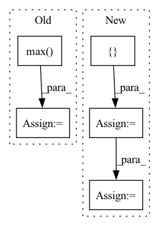

Pattern ID :12035

Before Change
// Pooling
// out: (BB, embedding_dim, NN)
if self._pooling_func_name == "max":
out = torch.max(out, -1, keepdim=True)[0]
elif self._pooling_func_name == "mean":
out = torch.mean(out, keepdim=True, dim=-1)
elif self._pooling_func_name == "sum":
After Change
// Pooling
// out: (BB, embedding_dim, NN)
masking_input = {"in_tensor": out.transpose(2, 1)}
if self.use_masking:
masking_input["mask_tensor"] = masking_tensor
out = self.pooling_block(masking_input)["masking_out"]
// output_tensor: (BB, embedding_dim)
// out: (BB, embedding_dim)
In pattern: SUPERPATTERN
Frequency: 4
Non-data size: 5
Instances
Fragment ID: 40704748
Project Name: enlite-ai/maze
Commit Name: 53a9f4e4997b8a5451f14fb57dd6c5cb9becd110
Time: 2021-04-15
Author: office@enlite.ai
File Name: maze/perception/blocks/feed_forward/point_net.py
M Class Name: PointNetFeatureTransformNet
N Class Name: PointNetFeatureTransformNet
M Method Name: forward(3)
N Method Name: forward(2)
M Parent Class: nn.Module
N Parent Class: nn.Module
M File Name: maze/perception/blocks/feed_forward/point_net.py
N File Name: maze/perception/blocks/feed_forward/point_net.py
M Start Line: 93
M End Line: 127
N Start Line: 80
N End Line: 134
'>
Before Change
heatmap = cv2.resize(heatmap[0], _input.shape[2:])
heatmap = heatmap - np.min(heatmap)
heatmap = heatmap / np.max(heatmap)
return heatmap
After Change
def grad_cam(self, _input: torch.FloatTensor, _class: List[int]) -> np.ndarray:
if isinstance(_class, int):
_class = [_class] * len(_input)
_class = torch.tensor(_class).to(_input.device)
feats = self._model.get_fm(_input).detach() // (N,C,H,W)
feats.requires_grad_()
_output: torch.FloatTensor = self._model.pool(feats)
'>
Fragment ID: 40704751
Project Name: ain-soph/trojanzoo
Commit Name: 2bf7c2a2e8acba2592ee17d60d1a59b7bd1bbfe5
Time: 2020-11-24
Author: ain-soph@live.com
File Name: trojanzoo/model/imagemodel.py
M Class Name: ImageModel
N Class Name: ImageModel
M Method Name: grad_cam(3)
N Method Name: grad_cam(3)
M Parent Class: Model
N Parent Class: Model
M File Name: trojanzoo/model/imagemodel.py
N File Name: trojanzoo/model/imagemodel.py
M Start Line: 206
M End Line: 222
N Start Line: 190
N End Line: 212
'>
Before Change
loss = loss_f(outputs.cpu(), labels.cpu())
// 统计混淆矩阵
_, predicted = torch.max(outputs.data, 1)
for j in range(len(labels)):
cate_i = labels[j].cpu().numpy()
pre_i = predicted[j].cpu().numpy()
conf_mat[cate_i, pre_i] += 1.
After Change
loss_list = []
path_error = []
loss_mean = 0
acc_batch_list = []
for i, data in enumerate(data_loader):
inputs, labels = data["image"], data["label"]
inputs, labels = inputs.to(device), labels.to(device)
outputs = model(inputs)
loss = loss_f(outputs.cpu(), labels.cpu())
loss_list.append(loss.item())
loss_mean = np.mean(loss_list)
acc_batch_list.append((1 - np.abs(outputs.cpu().detach().numpy() - labels.cpu().detach().numpy())))
ocean_acc = np.concatenate(acc_batch_list, axis=0).mean(axis=0)
acc_avg = ocean_acc.mean()
return loss_mean, ocean_acc, acc_avg
'>
Fragment ID: 40704735
Project Name: liaorongfan/deeppersonality
Commit Name: 565a883600a2f9be36416c98383ef54294da8ab1
Time: 2021-05-23
Author: 15670381505@163.com
File Name: dpcv/engine/portrait_model_trainer.py
M Class Name: ModelTrainer
N Class Name: ModelTrainer
M Method Name: valid(4)
N Method Name: valid(4)
M Parent Class: object
N Parent Class: object
M File Name: dpcv/engine/portrait_model_trainer.py
N File Name: dpcv/engine/portrait_model_trainer.py
M Start Line: 60
M End Line: 87
N Start Line: 54
N End Line: 71
'>
Before Change
if pad:
scale = np.min([float(w2)/w1, float(h2)/h1])
else:
scale = np.max([float(w2)/w1, float(h2)/h1])
M = get_affine_matrix(
center = (w2 / 2.0, h2 / 2.0),
translate = (dx, dy),
After Change
dx = (w2 - w1) / 2.0
dy = (h2 - h1) / 2.0
matrix_trans = np.array([[1.0, 0, dx],
[0, 1.0, dy],
[0, 0, 1.0]])
scale = np.min([float(w2)/w1, float(h2)/h1])
M = get_affine_matrix(
center = (w2 / 2.0, h2 / 2.0),
translate = (0, 0),
scale = scale)
M = np.array(M + [0., 0., 1.]).reshape(3, 3)
M = M.dot(matrix_trans)
return M
'>
Fragment ID: 40704745
Project Name: yuliangxiu/icon
Commit Name: 5f5c704c4643c183d8a110b5f6c2010c66b84567
Time: 2022-02-24
Author: yuliang.xiu@tuebingen.mpg.de
File Name: lib/pymaf/utils/streamer.py
M Class Name: AnonimousClass
N Class Name: AnonimousClass
M Method Name: aug_matrix(4)
N Method Name: aug_matrix(5)
M Parent Class:
N Parent Class:
M File Name: lib/pymaf/utils/streamer.py
N File Name: lib/pymaf/utils/streamer.py
M Start Line: 6
M End Line: 15
N Start Line: 7
N End Line: 23